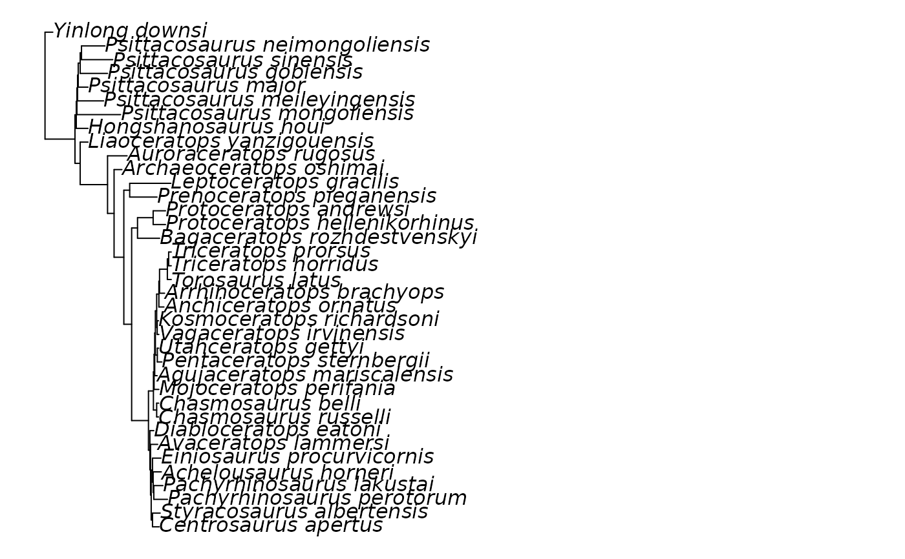
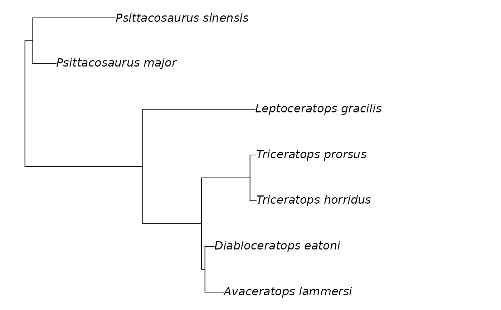

A function to check the list of tip names in a phylogeny against a vector of taxon names, and if desired, to trim the phylogeny to only include taxon names within the vector.
Arguments
- tree
phylo. A phylo object containing the phylogeny.- list
character. A vector of taxon names. Binomials can be separated with either a space or an underscore. The names should not contain any other punctuation.- out
character. Determine whether to return either adataframedescribing which taxa are included or not included in the tree ("full_table", the default), the same table but with taxa included in both the tree and the list removed ("diff_table"), the counts of taxa included and not included in the tree ("counts"), or the phylogeny trimmed to only include taxa in the provided list ("tree").- sort
character. If out = "full_table" or out = "diff_table", sort the names by presence in the tree ("presence", the default), or alphabetically ("az").
Value
If out = "full_table", a dataframe describing whether taxon
names are present in the list and/or the tree. If out = "diff_table", a
dataframe describing which taxon names are present in the list or the
tree, but not both. If out = "counts", a summary table containing the number
of taxa in the list but not the tree, in the tree but not the list, and in
both. If out = "tree", a phylo object consisting of the input phylogeny
trimmed to only include the tips present in the list.
Details
Phylogenies can be read into R from .txt or .tree files containing
the Newick formatted tree using ape::read.tree(), and can be saved as
files using ape::write.tree(). When out = "tree", tips are trimmed using
ape::drop.tip(); if your tree is not ultrametric (i.e. the tip dates are
not all the same), we recommend using paleotree::fixRootTime() to readjust
your branch lengths following pruning.
Examples
# track user par
oldpar <- par(no.readonly = TRUE)
#Read in example tree of ceratopsians from paleotree
library(paleotree)
#> Loading required package: ape
data(RaiaCopesRule)
#Set smaller margins for plotting
par(mar = rep(0.5, 4))
plot(ceratopsianTreeRaia)

#Specify list of names
dinosaurs <- c("Nasutoceratops_titusi", "Diabloceratops_eatoni",
"Zuniceratops_christopheri", "Psittacosaurus_major",
"Psittacosaurus_sinensis", "Avaceratops_lammersi",
"Xenoceratops_foremostensis", "Leptoceratops_gracilis",
"Triceratops_horridus", "Triceratops_prorsus")
#Table of taxon names in list, tree or both
ex1 <- phylo_check(tree = ceratopsianTreeRaia, list = dinosaurs)
#Counts of taxa in list, tree or both
ex2 <- phylo_check(tree = ceratopsianTreeRaia, list = dinosaurs,
out = "counts")
#Trim tree to tips in the list
my_ceratopsians <- phylo_check(tree = ceratopsianTreeRaia, list = dinosaurs,
out = "tree")
plot(my_ceratopsians)

# reset user par
par(oldpar)